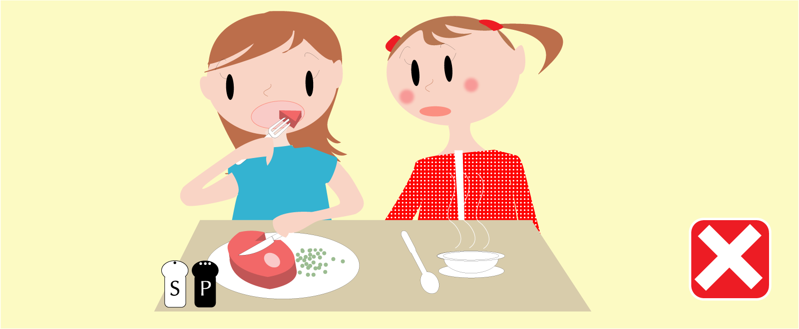

Respect other people on the table
Wait for the people on your table to finish their food, then you can go for another dish. If they are too slow, you should excuse yourself and go get another dish.
After you finish using salt and pepper, put them on the middle of the table so that other people can use them.